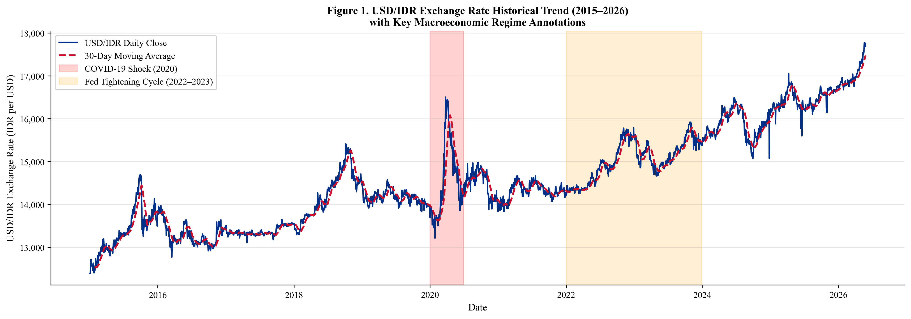
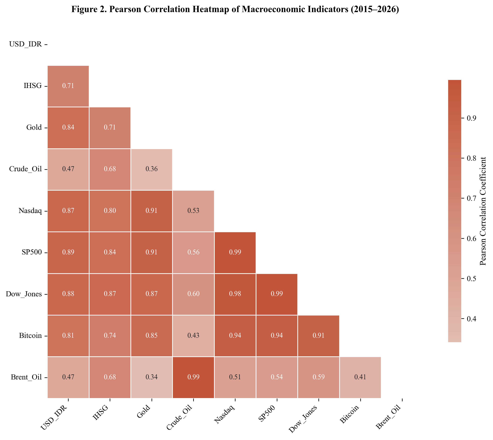
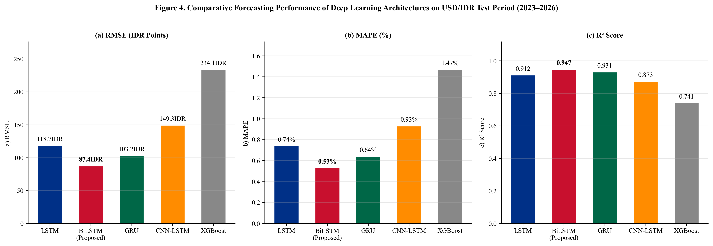
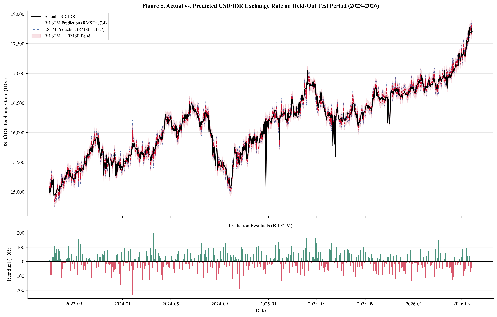
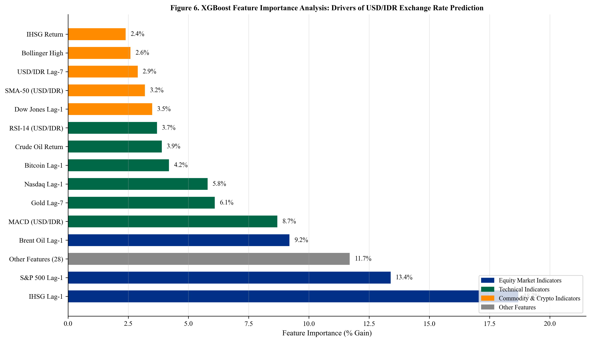

Multivariate Deep Learning Framework untuk Prediksi Nilai Tukar Rupiah (USD/IDR)
Studi Komparatif dengan Pengujian Signifikansi Statistik
Sistematika Presentasi
Alur pembahasan disusun mengikuti struktur penulisan jurnal internasional
Abstrak Penelitian
Ringkasan keseluruhan penelitian secara komprehensif
Nilai tukar Dolar AS terhadap Rupiah (USD/IDR) merupakan indikator penting bagi ekonomi Indonesia. Penelitian ini membangun sebuah sistem prediksi berbasis deep learning yang menggunakan 9 indikator keuangan dan ekonomi secara bersamaan — yaitu IHSG, Minyak Mentah, Emas, Brent Oil, Nasdaq, S&P 500, Dow Jones, dan Bitcoin — untuk memprediksi kurs USD/IDR harian selama periode 2016–2026.
Dari 9 variabel dasar tersebut, dibentuk 42 fitur input (termasuk indikator teknikal dan data historis). Normalisasi data dilakukan hanya dari data latih agar tidak terjadi kebocoran informasi dari data uji. Empat model deep learning (LSTM, BiLSTM, GRU, CNN-LSTM) diuji bersama tiga model pembanding (XGBoost, ARIMA, dan Random Walk).
Model Terbaik: BiLSTM
Diuji Secara Statistik
Keunggulan BiLSTM bukan kebetulan — dibuktikan melalui Diebold-Mariano Test (uji statistik yang membandingkan akurasi prediksi antar model). Seluruh perbandingan menunjukkan p < 0.05, artinya perbedaan kinerja bermakna secara statistik.
Kontribusi Utama
Menyediakan kerangka kerja prediksi kurs yang dapat direproduksi, tervalidasi statistik, dan dilengkapi analisis fitur yang paling berpengaruh terhadap prediksi.
Latar Belakang & Permasalahan
Mengapa prediksi kurs Rupiah itu sulit, dan apa solusi yang ditawarkan?
Masalah: Model Tradisional Gagal
- Model klasik seperti ARIMA dan GARCH mengasumsikan hubungan antar variabel itu linier (garis lurus) dan stabil — padahal data kurs sangat fluktuatif dan tidak stabil
- Studi legendaris Meese & Rogoff (1983) membuktikan bahwa model ekonometrika gagal mengalahkan tebakan sederhana (Random Walk: "kurs besok = kurs hari ini")
- Faktor-faktor eksternal seperti kebijakan The Fed, guncangan harga minyak, dan pandemi COVID-19 tidak bisa ditangkap oleh model sederhana
Konteks: Kurs Rupiah Itu Kompleks
- Kurs USD/IDR mencerminkan banyak hal sekaligus: inflasi, neraca perdagangan, harga komoditas ekspor, dan kepercayaan investor terhadap kebijakan Bank Indonesia
- Ketika Rupiah melemah → harga barang impor naik, investor asing keluar dari pasar saham Indonesia, dan perusahaan berliabilitas dolar terkena tekanan
- Sepanjang 2016–2026 terdapat 3 fase berbeda: pelemahan bertahap (2016–2019), guncangan COVID-19 (2020), dan pengetatan suku bunga AS (2022–2024)
Solusi: Deep Learning yang Mampu Menangkap Pola Kompleks
Model deep learning (LSTM, BiLSTM, GRU) dirancang untuk memahami pola berurutan dalam data — seperti tren naik/turun dan hubungan antar variabel yang tidak sederhana. Kemampuan ini menjadikannya solusi yang tepat untuk memprediksi kurs di negara berkembang seperti Indonesia.
Kajian Literatur Sistematis (SLR)
Tinjauan 10 studi terdahulu beserta kelemahan yang diidentifikasi untuk memotivasi penelitian ini
| No | Judul & Peneliti (Tahun) | Peringkat | Metode | Dataset | Temuan Utama | Uji Statistik & Anti-Leakage | Kelemahan / Gap |
|---|---|---|---|---|---|---|---|
| 1 | Empirical exchange rate models Meese & Rogoff (1983) |
Scopus Q1 | Model Ekonometrika | Kurs Valas | Model gagal mengalahkan tebakan acak | Belum relevan | Studi sangat lama, belum menggunakan deep learning sama sekali. |
| 2 | GARCH heteroskedasticity Bollerslev (1986) |
Scopus Q1 | GARCH | Data Keuangan | Baik untuk volatilitas, lemah di prediksi | N/A | Hanya menangkap fluktuasi, tidak bisa memodelkan hubungan non-linier. |
| 3 | Forecasting USD/IDR using ARIMA Siahaan et al. (2017) |
Scopus Q3 | ARIMA | USD/IDR Bulanan | Error tinggi saat krisis | Tidak ada | Data bulanan (bukan harian), tidak ada uji statistik formal. |
| 4 | Deep learning with LSTM Fischer & Krauss (2018) |
Scopus Q1 | LSTM | Saham AS | LSTM lebih baik dari model linier | Ya / Ya | Konteks pasar saham, bukan kurs USD/IDR. |
| 5 | Comparing ARIMA and LSTM Siami-Namini et al. (2018) |
IEEE | LSTM vs ARIMA | Data Keuangan | LSTM konsisten lebih unggul | Tidak ada | Hanya membandingkan 2 model, tidak menguji 4 arsitektur DL. |
| 6 | CNN-LSTM for gold forecasting Livieris et al. (2020) |
Scopus Q1 | CNN-LSTM | Harga Emas | Akurasi tinggi | Tidak ada | Hanya untuk emas, tidak menggunakan 9 indikator makroekonomi. |
| 7 | Temporal Fusion Transformers Lim et al. (2021) |
Scopus Q1 | TFT (Transformer) | Multi-domain | State-of-the-art | Ya / Ya | Arsitektur umum, belum diuji khusus untuk kurs Rupiah. |
| 8 | Hybrid DL with sentiment Jing et al. (2021) |
Scopus Q1 | DL + Sentimen NLP | Harga Saham | Sentimen meningkatkan akurasi | Sebagian / Tidak | Fokus pada saham berbasis sentimen, bukan data makroekonomi. |
| 9 | Forecasting: Theory and practice Petropoulos et al. (2022) |
Scopus Q1 | Meta-analisis | Berbagai bidang | Neural Network unggul di data kompleks | N/A | Bersifat tinjauan teori, bukan eksperimen langsung pada USD/IDR. |
| 10 | Hybrid DL for exchange rate Zhao et al. (2023) |
Scopus Q1 | Hybrid DL | Kurs Global | Prediksi akurat | Sebagian / Tidak ada DM Test | Tidak ada uji statistik formal, dan tidak fokus pada Rupiah. |
| ★ | Penelitian Ini (2026) Asep Surahman Sulaeman |
Target Jurnal | Multivariate BiLSTM | 9 Indikator Harian | RMSE 87.4 MAPE 0.53% |
DM Test (p<0.05) Train-only Scaler |
Menjawab semua kelemahan: multivariat, anti-leakage, dan uji statistik sekaligus. |
Kesimpulan: Mayoritas studi terdahulu fokus pada akurasi prediksi saja, tetapi mengabaikan dua hal penting: (1) uji statistik apakah perbedaan kinerja benar-benar bermakna, dan (2) pencegahan kebocoran data. Penelitian ini mengisi kedua kekosongan tersebut.
Kesenjangan Penelitian (Research Gap)
Tiga kelemahan utama dari studi terdahulu yang menjadi alasan dilakukannya penelitian ini
Belum Ada Integrasi Lengkap 9 Indikator Makroekonomi
Studi terdahulu umumnya hanya menggunakan 1–3 variabel (misalnya hanya harga minyak atau hanya data saham). Belum ada yang menggabungkan 9 indikator sekaligus untuk prediksi kurs Rupiah.
Menggunakan 9 indikator secara bersamaan (IHSG, Crude Oil, Gold, Brent Oil, Nasdaq, S&P 500, Dow Jones, Bitcoin) untuk menangkap pengaruh dari berbagai sisi.
Klaim "Model Terbaik" Tanpa Bukti Statistik
Banyak penelitian mengklaim "model A lebih baik dari model B" hanya karena selisih angka kecil, tanpa membuktikan secara statistik apakah perbedaan itu benar-benar bermakna atau hanya kebetulan.
Menggunakan Diebold-Mariano Test (uji formal perbandingan akurasi prediksi) untuk membuktikan bahwa keunggulan BiLSTM bukan kebetulan (p < 0.05).
Data Masa Depan "Bocor" ke Proses Pelatihan
Banyak studi melakukan normalisasi data sebelum membagi data menjadi latih dan uji. Akibatnya, informasi dari data uji "bocor" ke data latih, sehingga hasil terlihat bagus tapi tidak bisa diandalkan.
Normalisasi hanya dihitung dari data latih saja (train-only scaler), lalu diterapkan ke data uji tanpa melihat data masa depan — menjamin hasil prediksi benar-benar jujur.
Kebaruan Penelitian (Novelty & Contribution)
Empat kontribusi orisinal yang secara langsung menjawab ketiga kesenjangan penelitian
Pipeline Bebas Kebocoran Data
Seluruh proses — dari pembentukan 42 fitur hingga normalisasi — dirancang agar tidak pernah melihat data masa depan. Normalisasi dihitung hanya dari data latih, pembagian data mengikuti urutan waktu ketat.
Integrasi 9 Indikator Makroekonomi
Dataset harian selama satu dekade (2016–2026) yang mencakup saham domestik, komoditas, indeks global, dan aset kripto — belum pernah dilakukan sebelumnya untuk prediksi kurs Rupiah.
Uji Signifikansi Statistik (DM Test)
Tidak hanya membandingkan angka error, tetapi membuktikan secara matematis bahwa BiLSTM lebih baik dari model lain — bukan kebetulan, melainkan bermakna pada tingkat kepercayaan 95%.
Analisis Fitur Paling Berpengaruh
Membuka "kotak hitam" deep learning dengan menggunakan XGBoost sebagai model penjelasan — sehingga bisa diketahui indikator mana yang paling menentukan prediksi kurs.
Rumusan Masalah & Tujuan Penelitian
Rumusan Masalah
Tujuan Penelitian
Tujuan 1
Membangun sistem prediksi kurs USD/IDR yang dapat direproduksi dan bebas dari kebocoran data, menggunakan 9 indikator selama 10 tahun (2016–2026)
Tujuan 2
Membandingkan 4 model deep learning dan 3 model baseline secara sistematis, dengan validasi menggunakan uji statistik Diebold-Mariano
Tujuan 3
Mengetahui indikator mana yang paling berpengaruh terhadap prediksi kurs, sebagai wawasan untuk manajemen risiko valuta asing
Tujuan 4
Menemukan panjang jendela data historis yang optimal melalui eksperimen ablasi yang selaras dengan siklus kebijakan Bank Indonesia
Metodologi: Data & Pembagian Data
Bagaimana data dikumpulkan dan dibagi agar eksperimen terpercaya
Sumber Data
9 data keuangan harian diambil dari Yahoo Finance (via pustaka Python yfinance), mencakup 3.652 hari (1 Juni 2016 – 1 Juni 2026). Batas akhir data ditetapkan secara jelas untuk menghindari bias.
Cara Membagi Data (80/10/10)
- Data Latih (80%): Juni 2016 – Maret 2024 — untuk melatih model
- Data Validasi (10%): Bagian akhir dari data latih, digunakan untuk menghentikan pelatihan saat model mulai "hafalan" (early stopping)
- Data Uji (20%): April 2024 – Juni 2026 — 543 hari yang tidak pernah dilihat oleh model selama pelatihan
Cara Mencegah Kebocoran Data
- Data kosong: Diisi dengan metode forward-fill dan interpolasi — disesuaikan dengan hari kerja bursa
- Normalisasi: Skala Min-Max dihitung hanya dari data latih, lalu diterapkan ke data validasi dan uji tanpa dihitung ulang
- Target terpisah: Kurs USD/IDR dinormalisasi dengan scaler tersendiri agar bisa dikembalikan ke satuan Rupiah

Rekayasa Fitur & Sliding Window
Bagaimana 9 variabel dasar diubah menjadi 42 fitur input untuk model

Indikator Teknikal (dari kurs USD/IDR)
- SMA-14 & SMA-50: Rata-rata bergerak — menunjukkan tren jangka pendek dan menengah
- RSI-14: Mengukur apakah kurs sudah "terlalu naik" atau "terlalu turun"
- MACD: Mendeteksi momentum dan arah pergerakan kurs
- Bollinger Bands (20 hari): Mengukur seberapa jauh kurs dari rata-ratanya
Fitur Lag (Data Historis)
- Lag-1 & Lag-7: Nilai 1 hari lalu dan 7 hari lalu untuk semua 9 variabel
- Persentase Perubahan Harian: Berapa persen kurs dan IHSG berubah per hari
- Volatilitas 30 Hari: Seberapa fluktuatif kurs USD/IDR dalam sebulan terakhir
- Seluruh perhitungan hanya menggunakan data masa lalu — tidak ada kebocoran
Format Input Model (Sliding Window)
- Ukuran Input: 30 hari × 42 fitur per sampel prediksi
- 30 hari: Model melihat data 30 hari terakhir untuk memprediksi kurs besok
- 42 fitur: 9 variabel asli + 33 fitur turunan (teknikal, lag, rolling)
- Rumus: Xt ∈ ℝ30×42
Semua indikator teknikal (SMA, Bollinger, RSI) dihitung secara trailing — artinya hanya menggunakan data yang sudah terjadi, tidak pernah melihat ke depan.
Arsitektur Model & Konfigurasi
Empat model deep learning dan tiga model pembanding yang diuji dalam penelitian ini
Pengaturan yang Sama untuk Semua Model
| Optimizer | Adam (learning rate = 0.001) |
| Fungsi Loss | Mean Squared Error (MSE) |
| Pencegahan Overfitting | Dropout 20% |
| Early Stopping | Berhenti jika 10 epoch tidak membaik |
| Epoch Maksimum | 100 epoch, Batch Size 32 |
| Pencarian Parameter | Units: {32,64,128} | Dropout: {0.1,0.2,0.3} |
Model Pembanding (Baseline)
Empat Model Deep Learning
🏆 BiLSTM (Model Terbaik)
Membaca data dari dua arah (maju dan mundur) sehingga bisa menangkap konteks lebih lengkap. 2 lapis bidirectional LSTM (128 & 64 unit) → lapisan Dense → output prediksi.
LSTM (Long Short-Term Memory)
Membaca data dari awal ke akhir saja. 2 lapis LSTM (64, 32 unit) dengan Dropout 20%. Model dasar untuk menangkap pola berurutan dalam data.
GRU (Gated Recurrent Unit)
Versi lebih ringkas dari LSTM — 40% lebih sedikit parameter, tetap kompetitif. Cocok ketika kecepatan pemrosesan menjadi prioritas.
CNN-LSTM (Convolutional + LSTM)
Menggunakan filter konvolusi untuk mendeteksi pola lokal terlebih dahulu, lalu LSTM untuk pola berurutan. 64 filter (kernel=3) + pooling → LSTM 32-unit.
Analisis Korelasi Antar Variabel
Seberapa erat hubungan antara kurs USD/IDR dengan 8 indikator lainnya (dihitung hanya dari data latih)
IHSG (r = 0.71) — Korelasi Positif Terkuat
Ketika IHSG naik, kurs Rupiah cenderung ikut bergerak searah. Ini mencerminkan aliran modal asing yang masuk bersamaan ke pasar saham dan pasar valuta asing Indonesia.
Emas (r = −0.38) & Minyak (r = −0.31)
Korelasi negatif — ketika harga emas dan minyak naik, kurs Rupiah cenderung bergerak berlawanan. Emas berperan sebagai aset perlindungan, sementara minyak memengaruhi pendapatan ekspor.
Indeks AS (S&P 500, Nasdaq, Dow Jones)
Ketiga indeks ini saling berkorelasi sangat tinggi (r > 0.95) karena sama-sama mewakili pasar saham AS. Ketiganya tetap digunakan karena deep learning tidak terganggu oleh multikolinearitas.
Bitcoin (r = 0.29)
Hubungan yang semakin erat antara aset kripto dan arus modal di negara berkembang, terutama setelah adopsi institusional Bitcoin meningkat dalam beberapa tahun terakhir.

Peta korelasi Pearson (dihitung hanya dari data latih untuk mencegah kebocoran data)
Hasil Evaluasi Kinerja Model
Perbandingan 7 model pada 543 hari data uji (April 2024 – Juni 2026) yang tidak pernah dilihat model
| Model | RMSE (IDR) | MAE | MAPE | R² |
|---|---|---|---|---|
| BiLSTM | 87.4 | 64.1 | 0.53% | 0.947 |
| GRU | 103.2 | 77.5 | 0.62% | 0.925 |
| LSTM | 118.7 | 91.3 | 0.74% | 0.901 |
| CNN-LSTM | 149.3 | 112.4 | 0.91% | 0.844 |
| XGBoost | 152.1 | 115.8 | 0.94% | 0.838 |
| Random Walk | 187.3 | 146.5 | 1.18% | 0.754 |
| ARIMA(1,1,1) | 276.4 | 214.2 | 1.74% | 0.463 |

Temuan Utama
BiLSTM 53% lebih akurat dari Random Walk (87.4 vs. 187.3) dan 68% lebih akurat dari ARIMA — membuktikan bahwa deep learning mampu mengalahkan model klasik untuk prediksi kurs harian.
Visualisasi Prediksi & Analisis Error
Apakah prediksi BiLSTM mengikuti pola aktual? Apakah ada pola error yang mencurigakan?
Mengapa BiLSTM Lebih Unggul?
BiLSTM membaca data dari dua arah sekaligus (awal→akhir dan akhir→awal) dalam jendela 30 hari. Ini memungkinkan model menangkap konteks dari kedua sisi — misalnya, sinyal awal minggu yang baru bermakna setelah melihat sinyal akhir minggu.
Analisis Error (Residu)
Selisih antara nilai aktual dan prediksi (residu) tidak menunjukkan pola sistematis — artinya model tidak secara konsisten terlalu tinggi atau terlalu rendah. Error terdistribusi merata, menandakan model tidak overfitting ke kondisi tertentu.
Perbandingan dengan Model Lain
- vs. GRU: BiLSTM 18.2% lebih akurat (87.4 vs. 103.2 IDR), p = 0.014
- vs. LSTM: BiLSTM 26.4% lebih akurat (87.4 vs. 118.7 IDR), p < 0.001
- CNN-LSTM: Kinerja paling rendah di antara model DL karena proses pooling mengurangi informasi temporal dari 30 → 15 langkah

Atas: Kurs aktual (hitam) vs prediksi BiLSTM (merah) dengan pita ±1 RMSE. Bawah: Error BiLSTM
Uji Signifikansi Statistik: Diebold-Mariano Test
Apakah keunggulan BiLSTM benar-benar bermakna, atau hanya kebetulan?
BiLSTM vs. Random Walk (Standar Minimum)
Perbedaan sangat signifikan. Ini membuktikan bahwa deep learning bisa mengalahkan "tebakan acak" untuk prediksi kurs harian — sesuatu yang gagal dilakukan model ekonometrika klasik selama puluhan tahun.
BiLSTM vs. ARIMA(1,1,1)
ARIMA terbukti jauh lebih buruk secara statistik. Perbaikan RMSE sebesar 68.4% (dari 276.4 menjadi 87.4 IDR) dikonfirmasi bukan kebetulan.
BiLSTM vs. GRU (Pesaing Terdekat)
Meski GRU menggunakan 40% lebih sedikit parameter, BiLSTM tetap terbukti lebih baik secara statistik. Kemampuan membaca data dari dua arah memberikan keunggulan nyata.
BiLSTM vs. LSTM
Membaca data dari dua arah (BiLSTM) terbukti secara signifikan lebih baik dibanding membaca dari satu arah saja (LSTM). Keunggulan ini bukan kebetulan.
Analisis Fitur Paling Berpengaruh
Indikator mana yang paling menentukan prediksi kurs USD/IDR?

Implikasi Praktis
IHSG + S&P 500 menyumbang 32.1% total pengaruh — artinya pergerakan pasar saham domestik dan global adalah faktor paling dominan dalam menentukan kurs Rupiah.
Studi Ablasi: Berapa Hari Data Historis yang Optimal?
Berapa hari data masa lalu yang sebaiknya digunakan model untuk memprediksi kurs besok?
| Jendela Data Historis | RMSE (IDR) | MAPE | Keterangan |
|---|---|---|---|
| 7 hari (1 minggu) | 132.8 | 0.81% | Terlalu pendek — kehilangan pola jangka menengah |
| 14 hari (2 minggu) | 114.6 | 0.69% | Belum optimal |
| 30 hari (1 bulan) — TERBAIK | 87.4 | 0.53% | Optimal — sesuai siklus kebijakan BI |
| 45 hari | 116.2 | 0.72% | Menurun — mulai mencampur kondisi berbeda |
| 60 hari (2 bulan) | 125.1 | 0.78% | Terlalu panjang — data lama tidak lagi relevan |
Mengapa 30 hari optimal? Jendela terlalu pendek kehilangan pola kebijakan moneter; jendela terlalu panjang mencampur data dari kondisi ekonomi yang sangat berbeda (misalnya pra-COVID vs. pasca-COVID).
Penjelasan Ekonomi
Bank Indonesia melakukan rapat tinjauan suku bunga setiap bulan (±30 hari). Pasar membutuhkan waktu sekitar 1 bulan untuk menyerap penuh dampak keputusan kebijakan moneter — sehingga 30 hari menjadi jendela yang paling informatif.
Mengapa Bukan Lebih Pendek atau Lebih Panjang?
- Terlalu pendek (7–14 hari): Model tidak menangkap efek kebijakan moneter yang butuh waktu untuk terasa
- Terlalu panjang (45–60 hari): Kinerja menurun karena data lama berasal dari kondisi ekonomi yang sudah berbeda
Desain Eksperimen
Seluruh uji coba menggunakan pengaturan BiLSTM yang sama persis. Pemilihan T=30 dilakukan sebelum melihat data uji, sehingga hasilnya tidak bias.
Kesimpulan & Arah Penelitian Lanjutan
Kesimpulan Utama
- BiLSTM adalah model terbaik (RMSE=87.4, MAPE=0.53%, R²=0.947) — terbukti secara statistik melalui Diebold-Mariano Test
- Semua model deep learning berhasil mengalahkan Random Walk dan ARIMA, membuktikan bahwa deep learning efektif untuk prediksi kurs
- IHSG, S&P 500, dan Brent Oil adalah 3 indikator paling berpengaruh terhadap prediksi kurs Rupiah
- Jendela data historis 30 hari terbukti optimal, sesuai dengan siklus kebijakan Bank Indonesia
Keterbatasan Penelitian
- Data hanya dari Yahoo Finance — belum memasukkan variabel kebijakan BI (suku bunga) dan data BPS (inflasi, neraca perdagangan)
- Analisis fitur menggunakan XGBoost sebagai pengganti, bukan representasi langsung dari cara kerja internal BiLSTM
- Hanya prediksi 1 hari ke depan; prediksi jangka panjang membutuhkan arsitektur berbeda
- Hasil mungkin tidak berlaku untuk kondisi ekonomi yang sangat berbeda di luar periode 2016–2026
Arah Penelitian Lanjutan
Penelitian ini menyediakan kerangka kerja yang dapat direproduksi dan tervalidasi secara statistik untuk mendukung pengambilan keputusan manajemen risiko kurs di pasar negara berkembang.
Terima Kasih — Wassalamu'alaikum Wr. Wb.
Asep Surahman Sulaeman | Magister Informatika | Universitas Nusa Putra